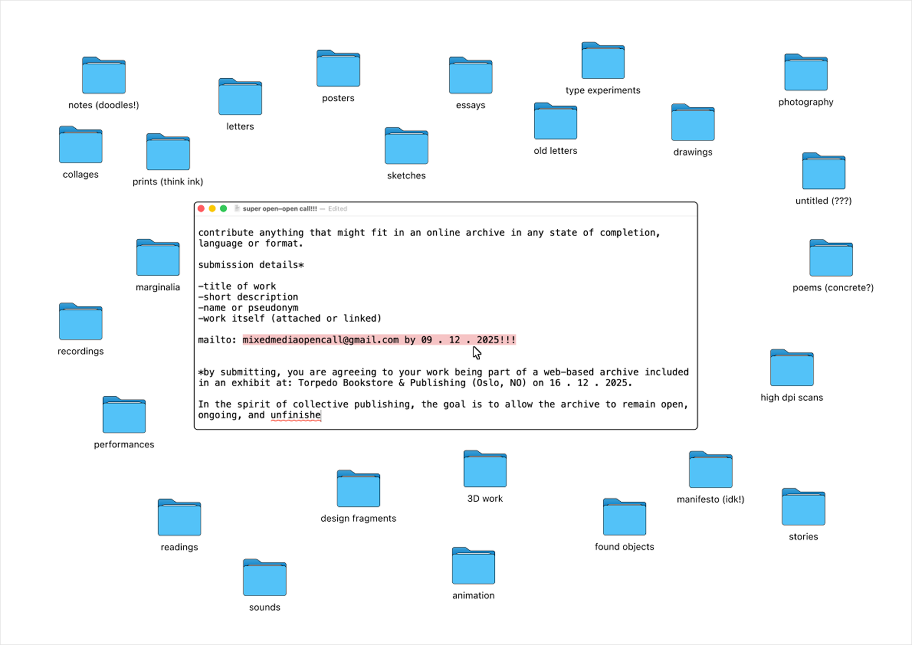

Live Open Call
Along with some other designers, we were given a space to work with the idea of mail art publishing (think: El Djarida). Given that mail art is very much a collaborative art form, with many people sending things in, my focus was on open calls. I was curious about the idea of running a very open, open call. To spread the word, I made a quick poster with the idea that people can just send whatever they are working on from random files. I hung this poster around London and Oslo.
I unified the submissions into one long receipt and began to think about the prospect of doing this live, given the curiosity I had around the visual output.


It was an interesting experiment to compare the more 'premediated' open call...
Unfortunately, there was not much footage of the live open call in action!